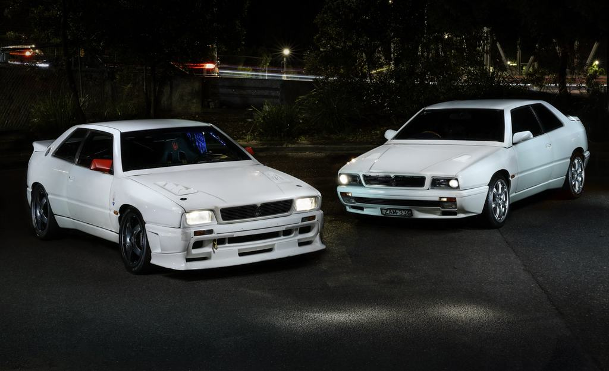
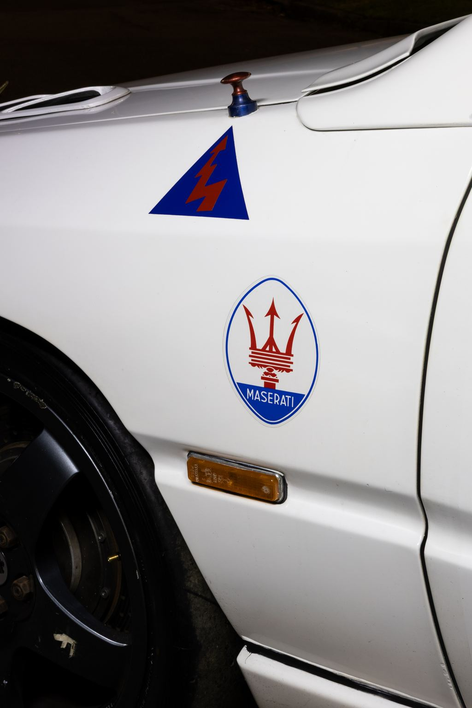
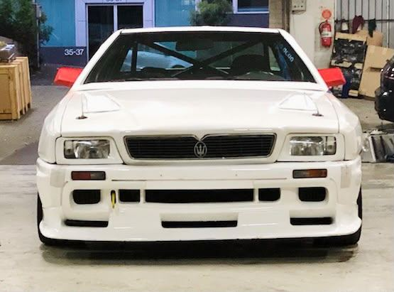
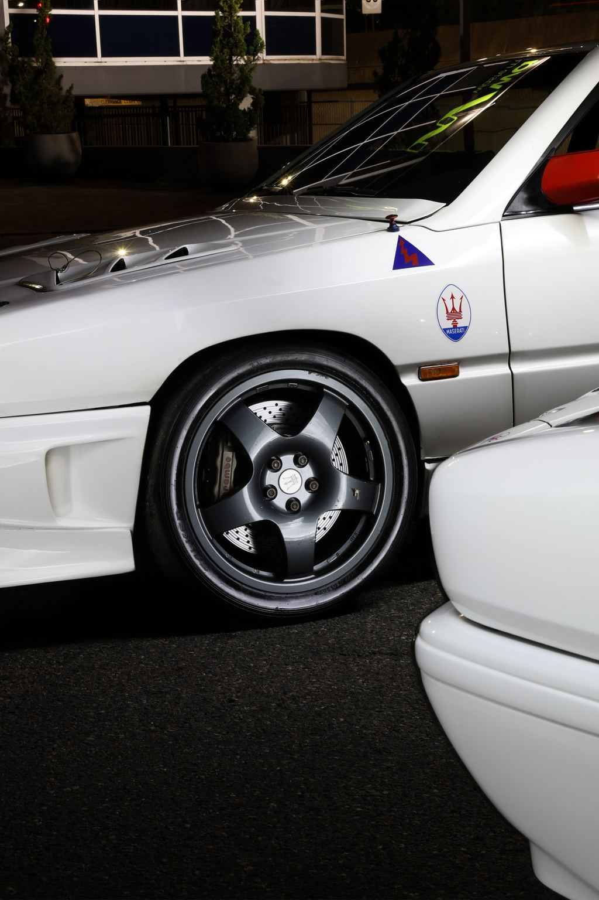
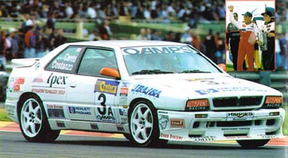
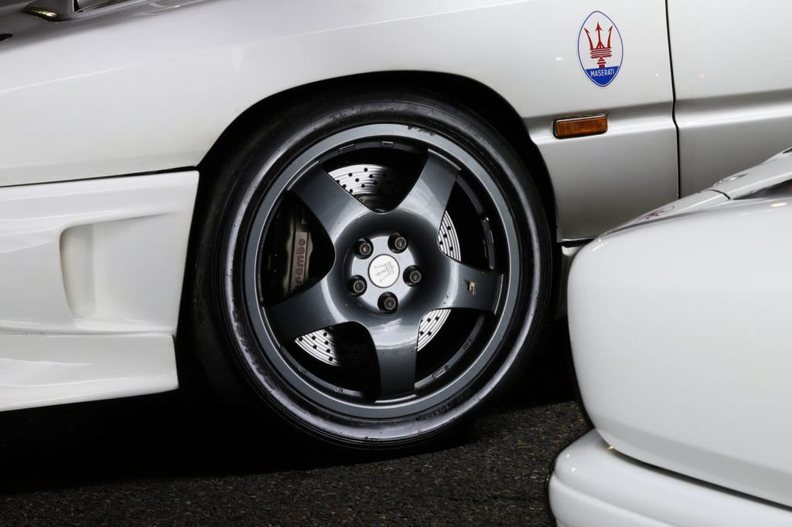

Number 21 of 24
The 1995 Ghibli Open Cup Evoluzione
Maserati's factory-built racing Ghibli, in original race condition, 590 kilometres from new.

The series
One championship. One season.
Maserati went racing with the Ghibli in 1995, and built a championship around it.
The factory built a competition version of its twin-turbo coupé and wrapped a pan-European one-make series around it, for owners who wanted to race what they drove.
Historica Selecta ran it out of Modena, under Adolfo Orsi. Eight rounds, at some of Europe's better circuits, in company with the DTM. The grids filled with gentleman drivers who paid for the privilege.
The cars were serious. Maserati and Alfa Corse prepared the engines to competition specification, with larger intercoolers, modified engine management and straight-through exhausts. The 2.0-litre twin-turbo V6 gave around 330 bhp. That is 165 bhp per litre, out of a road-car block, through a Getrag six-speed manual.
One rule kept the field honest. The regulations required the engine, turbochargers, gearbox and differential to be sealed at the factory before delivery, and permitted nothing beyond ordinary maintenance.
No development war. No engine budget. Every car finished the 1995 season without an engine rebuild.
The first season worked. The second did not. The series was cancelled after just two races of 1996, a casualty of Maserati's finances rather than the racing.
After that first season the factory offered an Evoluzione upgrade for the cars that kept racing. This is one of those.
Sources Bonhams, lot 215 · Maserati Classic · Conceptcarz · Enrico's Maserati Pages

Production
Twenty-four, and six still running
Period accounts of the Open Cup record 25 cars built for the 1995 season; other sources say fewer than thirty. Nobody puts it above thirty.
The owner of this car states that 24 Evoluzione bodies were built, that only ten were completed as race cars and the rest finished as road cars, and that four of the ten have since been written off. Six remain.
Sources Conceptcarz · Enrico's Maserati Pages · Evoluzione figures and attrition per the owner

This car
590 kilometres, 24 years, one owner
Number 21 of 24. Photographed in Sydney, where it has lived for a quarter of a century.
Bought from the dealer he worked for
The present owner spent eighteen years at the Maserati dealership. He bought this car from it, and has kept it for twenty-four.
That is the provenance in one sentence, and it is the kind that matters: no chain of speculators, no gap in the story, no car that surfaced from nowhere. One owner, who knew exactly what he was buying, and who has had it since.
It was among the last cars Maserati campaigned. The factory upgraded it to Evoluzione specification: modified ECUs, high-flow injectors, a racing camshaft, head work and factory extractors. The owner rates it at 400 hp. The full list of factory upgrades is longer than this page.
It has raced in Italy and in Australia. The odometer reads 590 kilometres. The car remains in its original race condition, and has not been converted, softened or made road-friendly.

Everything above comes from the owner. Chassis and engine numbers, the race record and the registration position are confirmed on enquiry, with the paperwork in front of you. What the documents do not establish is not claimed here.
- Model
- Maserati Ghibli Open Cup Evoluzione
- Build number
- 21 of 24Per the owner
- Odometer
- 590 km
- Ownership
- One owner, 24 yearsPurchased from the Maserati dealership where he worked for 18 years
- Year
- 1995
- Race history
- Italy, and Sandown Raceway, AustraliaRaced as number 3A by Quemby and Costanzo. Photographed in period at Sandown. Further details and documentation on enquiry
- Condition
- Original race condition
- Location
- Sydney, Australia

The details
Read the car like a spec sheet
Every mark on this car is there for a reason.
Tap a number
Brembo calipers, drilled discs
Red Brembo calipers over cross-drilled, grooved rotors. Braking sized for a circuit, not the school run.
Specification
Factory competition specification
Series specification for the Ghibli Open Cup as built. This car's own figures, including its Evoluzione upgrades, appear above.
- Engine
- 1,996 cc twin-turbocharged 24-valve V6
- Power, as built
- 330 bhp165 bhp per litre
- Power, this car
- 400 hpAfter factory Evoluzione upgrades. Per the owner
- Evoluzione upgrades
- Modified ECUs, high-flow injectors, racing camshaft, head work, factory extractorsPer the owner. Full list on enquiry
- Preparation
- Maserati with Alfa CorseUprated intercoolers, modified engine management, straight-through exhaust
- Gearbox
- Getrag six-speed manual
- Drive
- Rear wheels, limited-slip differential
- Brakes
- Ventilated discs, Brembo calipersDrilled and grooved discs on the car offered
- Wheels
- Five-spoke Speedline, trident centre caps
- Body
- Two-door coupé, Ghibli II
Series figures per Maserati's classic archive, Bonhams' catalogue, Enrico's Maserati Pages and contemporary reporting. Figures particular to this car are attributed to the owner. Nothing on this page is estimated.
The gallery
Up close, at night
Fourteen photographs of the car, including one from its racing years.
Swipe or use the arrows
Enquire
The next owner reads this part
Enquire for price
Ask about this car
The car is in Sydney, Australia. Inspections are by appointment and the documents come out with the car. Bring your questions.
Sydney, Australia
Inspection by appointment.